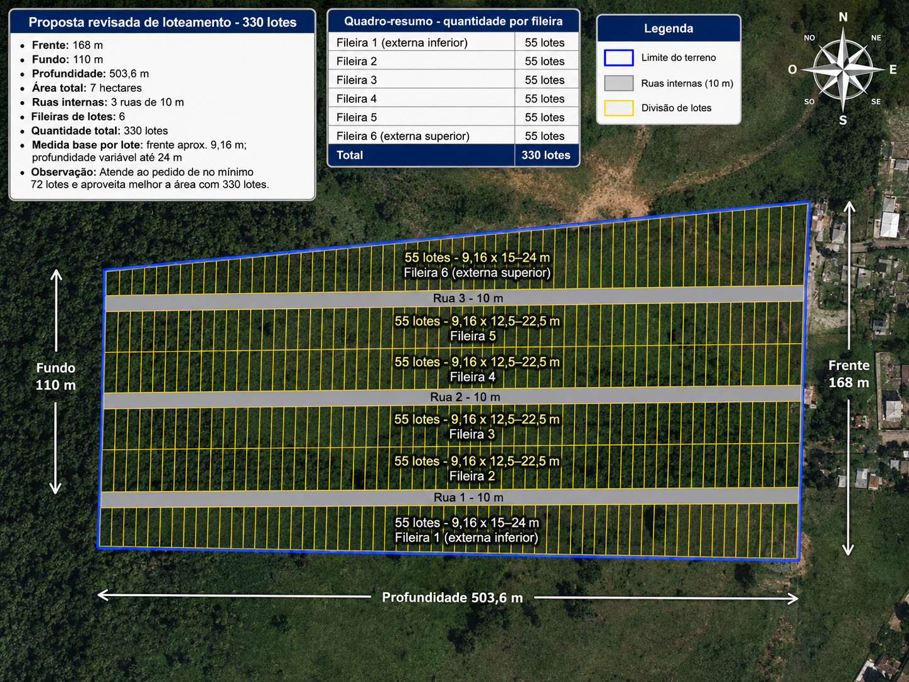
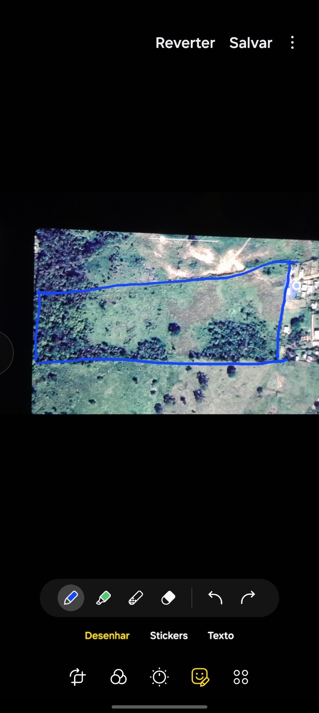

Mapa tecnico
Lotes clicaveis com medidas individuais
Lote
Rua 10 m
Selecionado
Referencia visual
Baseado no contorno informado
As fotos ficam como referência do contorno informado. O desenho interativo usa as medidas do terreno para calcular lotes, ruas e coordenadas aproximadas.

